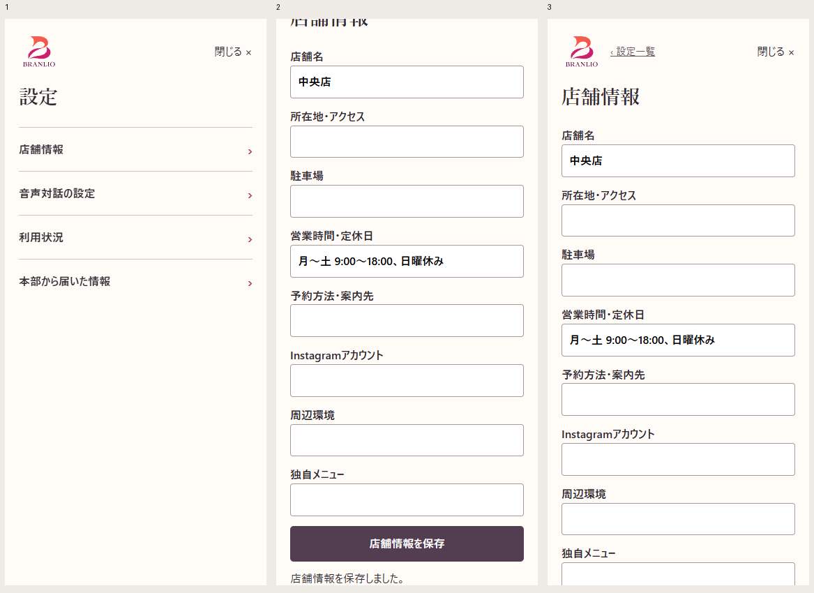
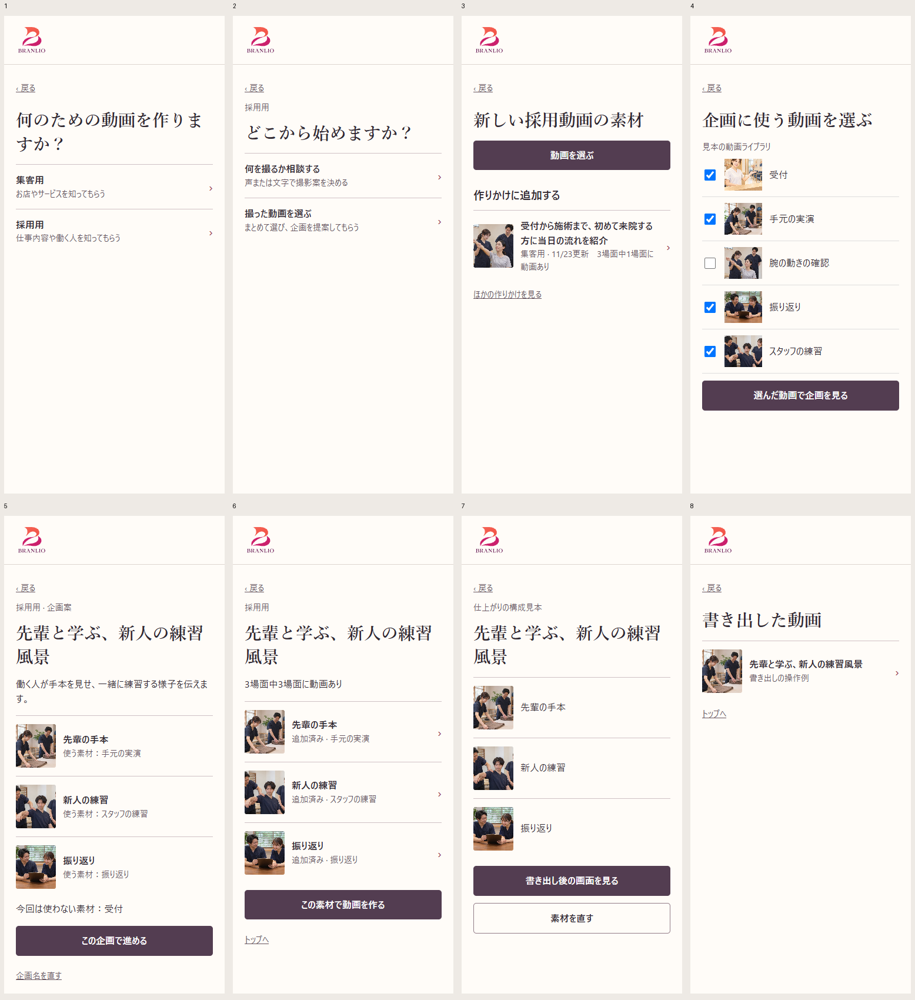
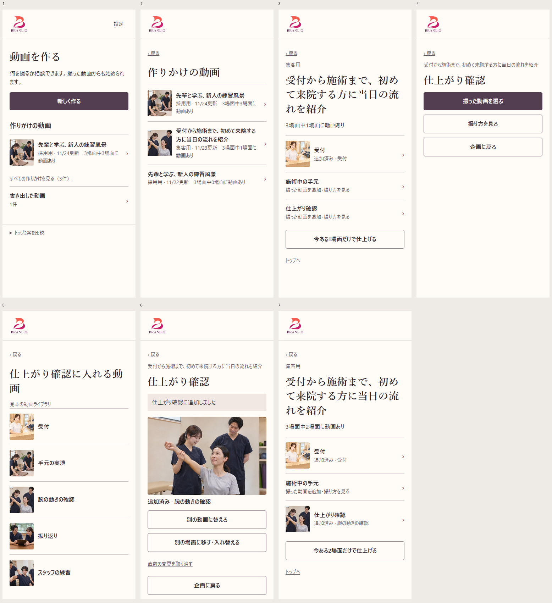

先ほどの回答と、以下の3組の画面を照合してください。 各ページの番号は、375px幅で操作した順序です。 1. 営業時間の変更。保存したと分かる表示と、再び開いたときの値を確認してください。 2. 採用動画の作成。選んだ4本のうち何を使うか、企画がいつ決まり、 書き出した結果をどこで見つけられるかを確認してください。 3. 昨日の企画への追加。「仕上がり確認」だけに素材が入り、 「施術中の手元」が空いたままだと判断できるかを確認してください。 各用事について、最初の予想と違った画面、用事が済んだと判断した根拠を、 用事と画面番号を添えて返してください。画像から判断できない点は未確認としてください。


